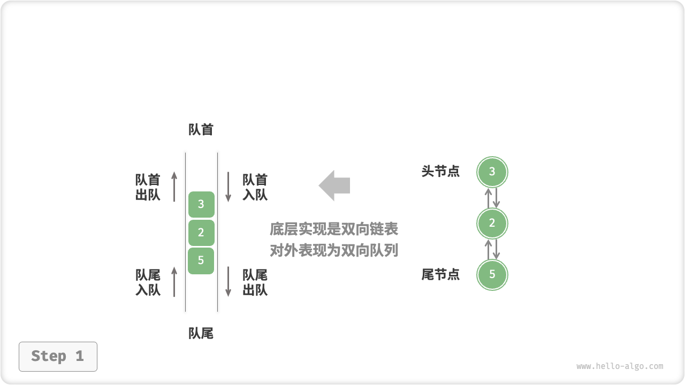
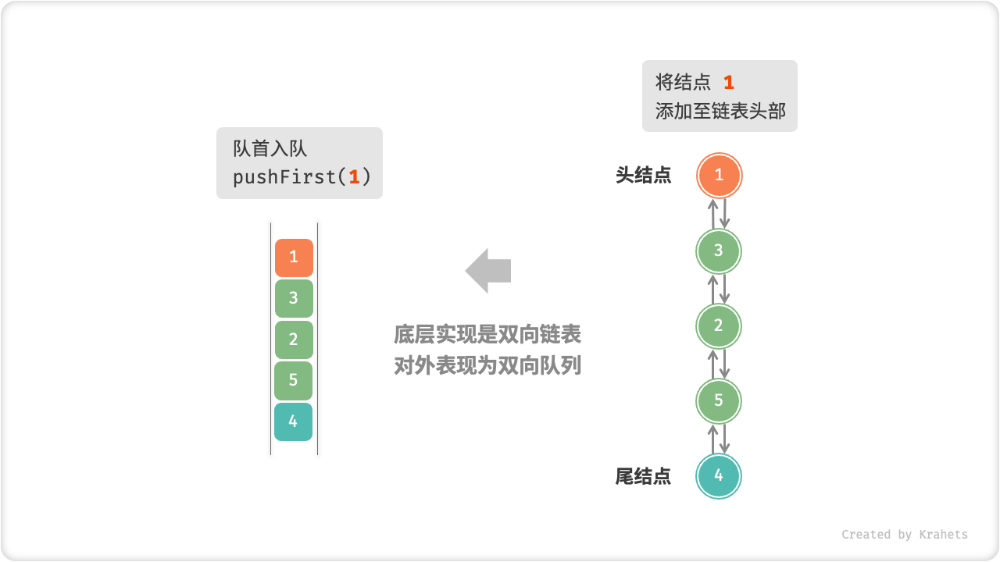
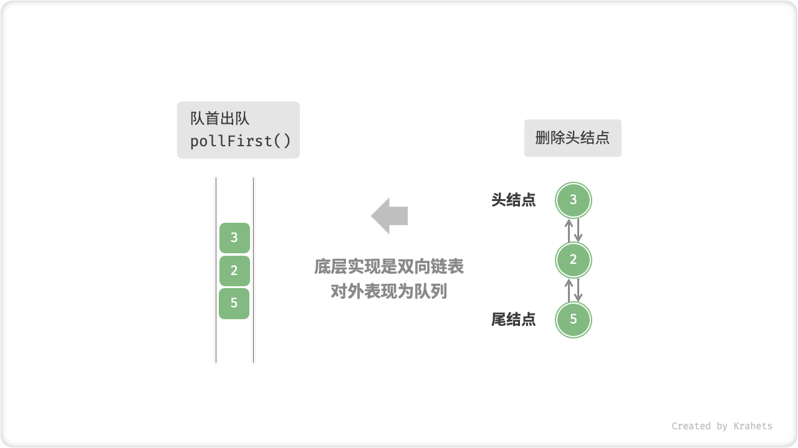
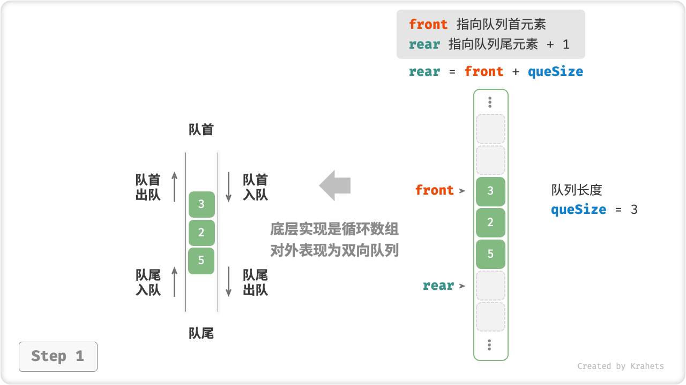
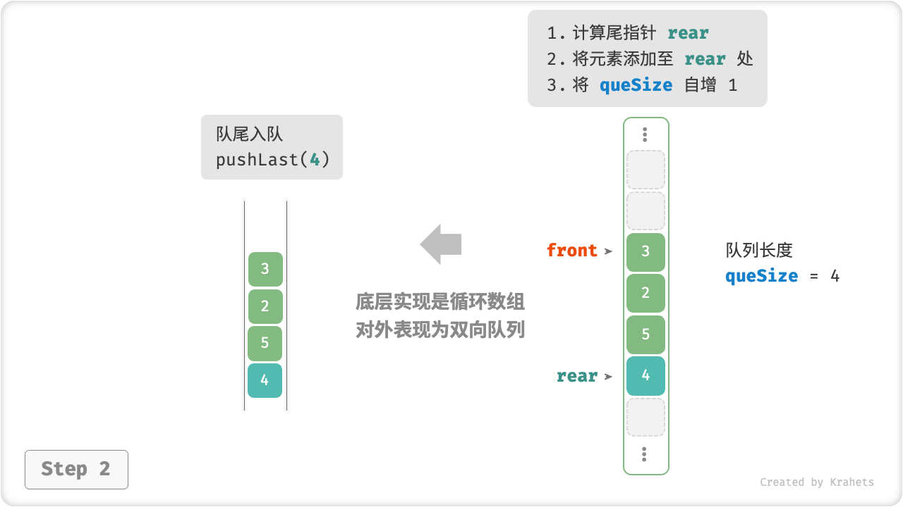
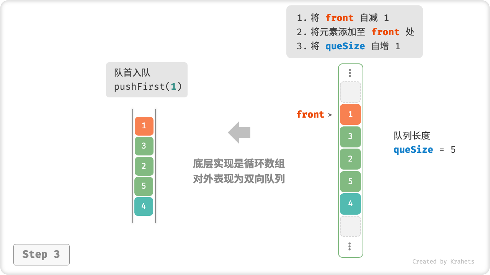
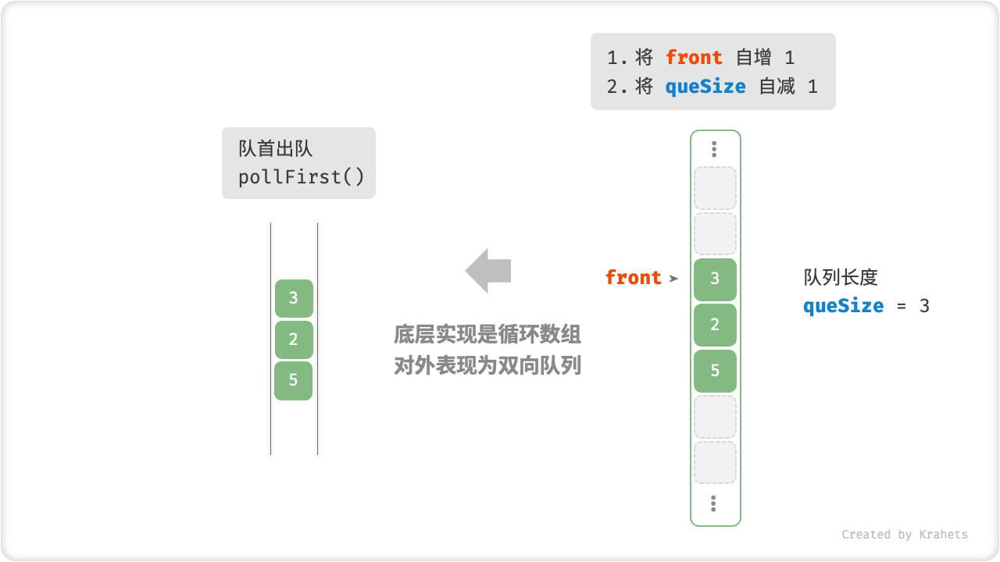

5.3. 双向队列¶
对于队列，我们只能在头部删除或在尾部添加元素，而「双向队列 Deque」更加灵活，在其头部和尾部都能执行元素添加或删除操作。

Fig. 双向队列的操作
5.3.1. 双向队列常用操作¶
双向队列的常用操作见下表，方法名需根据特定语言来确定。
| 方法名 | 描述 | 时间复杂度 |
|---|---|---|
| pushFirst() | 将元素添加至队首 | \(O(1)\) |
| pushLast() | 将元素添加至队尾 | \(O(1)\) |
| pollFirst() | 删除队首元素 | \(O(1)\) |
| pollLast() | 删除队尾元素 | \(O(1)\) |
| peekFirst() | 访问队首元素 | \(O(1)\) |
| peekLast() | 访问队尾元素 | \(O(1)\) |
| size() | 获取队列的长度 | \(O(1)\) |
| isEmpty() | 判断队列是否为空 | \(O(1)\) |
相同地，我们可以直接使用编程语言实现好的双向队列类。
deque.java
/* 初始化双向队列 */
Deque<Integer> deque = new LinkedList<>();
/* 元素入队 */
deque.offerLast(2); // 添加至队尾
deque.offerLast(5);
deque.offerLast(4);
deque.offerFirst(3); // 添加至队首
deque.offerFirst(1);
/* 访问元素 */
int peekFirst = deque.peekFirst(); // 队首元素
int peekLast = deque.peekLast(); // 队尾元素
/* 元素出队 */
int pollFirst = deque.pollFirst(); // 队首元素出队
int pollLast = deque.pollLast(); // 队尾元素出队
/* 获取双向队列的长度 */
int size = deque.size();
/* 判断双向队列是否为空 */
boolean isEmpty = deque.isEmpty();
deque.cpp
/* 初始化双向队列 */
deque<int> deque;
/* 元素入队 */
deque.push_back(2); // 添加至队尾
deque.push_back(5);
deque.push_back(4);
deque.push_front(3); // 添加至队首
deque.push_front(1);
/* 访问元素 */
int front = deque.front(); // 队首元素
int back = deque.back(); // 队尾元素
/* 元素出队 */
deque.pop_front(); // 队首元素出队
deque.pop_back(); // 队尾元素出队
/* 获取双向队列的长度 */
int size = deque.size();
/* 判断双向队列是否为空 */
bool empty = deque.empty();
deque.py
""" 初始化双向队列 """
duque = deque()
""" 元素入队 """
duque.append(2) # 添加至队尾
duque.append(5)
duque.append(4)
duque.appendleft(3) # 添加至队首
duque.appendleft(1)
""" 访问元素 """
front = duque[0] # 队首元素
rear = duque[-1] # 队尾元素
""" 元素出队 """
pop_front = duque.popleft() # 队首元素出队
pop_rear = duque.pop() # 队尾元素出队
""" 获取双向队列的长度 """
size = len(duque)
""" 判断双向队列是否为空 """
is_empty = len(duque) == 0
deque_test.go
/* 初始化双向队列 */
// 在 Go 中，将 list 作为双向队列使用
deque := list.New()
/* 元素入队 */
deque.PushBack(2) // 添加至队尾
deque.PushBack(5)
deque.PushBack(4)
deque.PushFront(3) // 添加至队首
deque.PushFront(1)
/* 访问元素 */
front := deque.Front() // 队首元素
rear := deque.Back() // 队尾元素
/* 元素出队 */
deque.Remove(front) // 队首元素出队
deque.Remove(rear) // 队尾元素出队
/* 获取双向队列的长度 */
size := deque.Len()
/* 判断双向队列是否为空 */
isEmpty := deque.Len() == 0
deque.js
/* 初始化双向队列 */
// JavaScript 没有内置的双端队列，只能把 Array 当作双端队列来使用
const deque = [];
/* 元素入队 */
deque.push(2);
deque.push(5);
deque.push(4);
// 请注意，由于是数组，unshift() 方法的时间复杂度为 O(n)
deque.unshift(3);
deque.unshift(1);
console.log("双向队列 deque = ", deque);
/* 访问元素 */
const peekFirst = deque[0];
console.log("队首元素 peekFirst = " + peekFirst);
const peekLast = deque[deque.length - 1];
console.log("队尾元素 peekLast = " + peekLast);
/* 元素出队 */
// 请注意，由于是数组，shift() 方法的时间复杂度为 O(n)
const popFront = deque.shift();
console.log("队首出队元素 popFront = " + popFront + "，队首出队后 deque = " + deque);
const popBack = deque.pop();
console.log("队尾出队元素 popBack = " + popBack + "，队尾出队后 deque = " + deque);
/* 获取双向队列的长度 */
const size = deque.length;
console.log("双向队列长度 size = " + size);
/* 判断双向队列是否为空 */
const isEmpty = size === 0;
console.log("双向队列是否为空 = " + isEmpty);
deque.ts
/* 初始化双向队列 */
// TypeScript 没有内置的双端队列，只能把 Array 当作双端队列来使用
const deque: number[] = [];
/* 元素入队 */
deque.push(2);
deque.push(5);
deque.push(4);
// 请注意，由于是数组，unshift() 方法的时间复杂度为 O(n)
deque.unshift(3);
deque.unshift(1);
console.log("双向队列 deque = ", deque);
/* 访问元素 */
const peekFirst: number = deque[0];
console.log("队首元素 peekFirst = " + peekFirst);
const peekLast: number = deque[deque.length - 1];
console.log("队尾元素 peekLast = " + peekLast);
/* 元素出队 */
// 请注意，由于是数组，shift() 方法的时间复杂度为 O(n)
const popFront: number = deque.shift() as number;
console.log("队首出队元素 popFront = " + popFront + "，队首出队后 deque = " + deque);
const popBack: number = deque.pop() as number;
console.log("队尾出队元素 popBack = " + popBack + "，队尾出队后 deque = " + deque);
/* 获取双向队列的长度 */
const size: number = deque.length;
console.log("双向队列长度 size = " + size);
/* 判断双向队列是否为空 */
const isEmpty: boolean = size === 0;
console.log("双向队列是否为空 = " + isEmpty);
deque.cs
/* 初始化双向队列 */
// 在 C# 中，将链表 LinkedList 看作双向队列来使用
LinkedList<int> deque = new LinkedList<int>();
/* 元素入队 */
deque.AddLast(2); // 添加至队尾
deque.AddLast(5);
deque.AddLast(4);
deque.AddFirst(3); // 添加至队首
deque.AddFirst(1);
/* 访问元素 */
int peekFirst = deque.First.Value; // 队首元素
int peekLast = deque.Last.Value; // 队尾元素
/* 元素出队 */
deque.RemoveFirst(); // 队首元素出队
deque.RemoveLast(); // 队尾元素出队
/* 获取双向队列的长度 */
int size = deque.Count;
/* 判断双向队列是否为空 */
bool isEmpty = deque.Count == 0;
deque.swift
/* 初始化双向队列 */
// Swift 没有内置的双向队列类，可以把 Array 当作双向队列来使用
var deque: [Int] = []
/* 元素入队 */
deque.append(2) // 添加至队尾
deque.append(5)
deque.append(4)
deque.insert(3, at: 0) // 添加至队首
deque.insert(1, at: 0)
/* 访问元素 */
let peekFirst = deque.first! // 队首元素
let peekLast = deque.last! // 队尾元素
/* 元素出队 */
// 使用 Array 模拟时 pollFirst 的复杂度为 O(n)
let pollFirst = deque.removeFirst() // 队首元素出队
let pollLast = deque.removeLast() // 队尾元素出队
/* 获取双向队列的长度 */
let size = deque.count
/* 判断双向队列是否为空 */
let isEmpty = deque.isEmpty
5.3.2. 双向队列实现 *¶
与队列类似，双向队列同样可以使用链表或数组来实现。
基于双向链表的实现¶
回忆上节内容，由于可以方便地删除链表头结点（对应出队操作），以及在链表尾结点后添加新结点（对应入队操作），因此我们使用普通单向链表来实现队列。
而双向队列的头部和尾部都可以执行入队与出队操作，换言之，双向队列的操作是“首尾对称”的，也需要实现另一个对称方向的操作。因此，双向队列需要使用「双向链表」来实现。
我们将双向链表的头结点和尾结点分别看作双向队列的队首和队尾，并且实现在两端都能添加与删除结点。





以下是具体实现代码。
linkedlist_deque.java
/* 双向链表结点 */
class ListNode {
int val; // 结点值
ListNode next; // 后继结点引用（指针）
ListNode prev; // 前驱结点引用（指针）
ListNode(int val) {
this.val = val;
prev = next = null;
}
}
/* 基于双向链表实现的双向队列 */
class LinkedListDeque {
private ListNode front, rear; // 头结点 front ，尾结点 rear
private int queSize = 0; // 双向队列的长度
public LinkedListDeque() {
front = rear = null;
}
/* 获取双向队列的长度 */
public int size() {
return queSize;
}
/* 判断双向队列是否为空 */
public boolean isEmpty() {
return size() == 0;
}
/* 入队操作 */
private void push(int num, boolean isFront) {
ListNode node = new ListNode(num);
// 若链表为空，则令 front, rear 都指向 node
if (isEmpty())
front = rear = node;
// 队首入队操作
else if (isFront) {
// 将 node 添加至链表头部
front.prev = node;
node.next = front;
front = node; // 更新头结点
// 队尾入队操作
} else {
// 将 node 添加至链表尾部
rear.next = node;
node.prev = rear;
rear = node; // 更新尾结点
}
queSize++; // 更新队列长度
}
/* 队首入队 */
public void pushFirst(int num) {
push(num, true);
}
/* 队尾入队 */
public void pushLast(int num) {
push(num, false);
}
/* 出队操作 */
private Integer poll(boolean isFront) {
// 若队列为空，直接返回 null
if (isEmpty())
return null;
int val;
// 队首出队操作
if (isFront) {
val = front.val; // 暂存头结点值
// 删除头结点
ListNode fNext = front.next;
if (fNext != null) {
fNext.prev = null;
front.next = null;
}
front = fNext; // 更新头结点
// 队尾出队操作
} else {
val = rear.val; // 暂存尾结点值
// 删除尾结点
ListNode rPrev = rear.prev;
if (rPrev != null) {
rPrev.next = null;
rear.prev = null;
}
rear = rPrev; // 更新尾结点
}
queSize--; // 更新队列长度
return val;
}
/* 队首出队 */
public Integer pollFirst() {
return poll(true);
}
/* 队尾出队 */
public Integer pollLast() {
return poll(false);
}
/* 访问队首元素 */
public Integer peekFirst() {
return isEmpty() ? null : front.val;
}
/* 访问队尾元素 */
public Integer peekLast() {
return isEmpty() ? null : rear.val;
}
/* 返回数组用于打印 */
public int[] toArray() {
ListNode node = front;
int[] res = new int[size()];
for (int i = 0; i < res.length; i++) {
res[i] = node.val;
node = node.next;
}
return res;
}
}
linkedlist_deque.cpp
/* 双向链表结点 */
struct DoublyListNode {
int val; // 结点值
DoublyListNode *next; // 后继结点指针
DoublyListNode *prev; // 前驱结点指针
DoublyListNode(int val) : val(val), prev(nullptr), next(nullptr) {}
};
/* 基于双向链表实现的双向队列 */
class LinkedListDeque {
private:
DoublyListNode *front, *rear; // 头结点 front ，尾结点 rear
int queSize = 0; // 双向队列的长度
public:
/* 构造方法 */
LinkedListDeque() : front(nullptr), rear(nullptr) {}
/* 析构方法 */
~LinkedListDeque() {
// 释放内存
DoublyListNode *pre, *cur = front;
while (cur != nullptr) {
pre = cur;
cur = cur->next;
delete pre;
}
}
/* 获取双向队列的长度 */
int size() {
return queSize;
}
/* 判断双向队列是否为空 */
bool isEmpty() {
return size() == 0;
}
/* 入队操作 */
void push(int num, bool isFront) {
DoublyListNode *node = new DoublyListNode(num);
// 若链表为空，则令 front, rear 都指向 node
if (isEmpty())
front = rear = node;
// 队首入队操作
else if (isFront) {
// 将 node 添加至链表头部
front->prev = node;
node->next = front;
front = node; // 更新头结点
// 队尾入队操作
} else {
// 将 node 添加至链表尾部
rear->next = node;
node->prev = rear;
rear = node; // 更新尾结点
}
queSize++; // 更新队列长度
}
/* 队首入队 */
void pushFirst(int num) {
push(num, true);
}
/* 队尾入队 */
void pushLast(int num) {
push(num, false);
}
/* 出队操作 */
int poll(bool isFront) {
// 若队列为空，直接返回 -1
if (isEmpty())
return -1;
int val;
// 队首出队操作
if (isFront) {
val = front->val; // 暂存头结点值
// 删除头结点
DoublyListNode *fNext = front->next;
if (fNext != nullptr) {
fNext->prev = nullptr;
front->next = nullptr;
}
front = fNext; // 更新头结点
// 队尾出队操作
} else {
val = rear->val; // 暂存尾结点值
// 删除尾结点
DoublyListNode *rPrev = rear->prev;
if (rPrev != nullptr) {
rPrev->next = nullptr;
rear->prev = nullptr;
}
rear = rPrev; // 更新尾结点
}
queSize--; // 更新队列长度
return val;
}
/* 队首出队 */
int pollFirst() {
return poll(true);
}
/* 队尾出队 */
int pollLast() {
return poll(false);
}
/* 访问队首元素 */
int peekFirst() {
return isEmpty() ? -1 : front->val;
}
/* 访问队尾元素 */
int peekLast() {
return isEmpty() ? -1 : rear->val;
}
/* 返回数组用于打印 */
vector<int> toVector() {
DoublyListNode *node = front;
vector<int> res(size());
for (int i = 0; i < res.size(); i++) {
res[i] = node->val;
node = node->next;
}
return res;
}
};
linkedlist_deque.py
""" 双向链表结点 """
class ListNode:
def __init__(self, val):
self.val = val
self.next = None # 后继结点引用（指针）
self.prev = None # 前驱结点引用（指针）
""" 基于双向链表实现的双向队列 """
class LinkedListDeque:
""" 构造方法 """
def __init__(self):
self.front, self.rear = None, None # 头结点 front ，尾结点 rear
self.__size = 0 # 双向队列的长度
""" 获取双向队列的长度 """
def size(self):
return self.__size
""" 判断双向队列是否为空 """
def is_empty(self):
return self.size() == 0
""" 入队操作 """
def push(self, num, is_front):
node = ListNode(num)
# 若链表为空，则令 front, rear 都指向 node
if self.is_empty():
self.front = self.rear = node
# 队首入队操作
elif is_front:
# 将 node 添加至链表头部
self.front.prev = node
node.next = self.front
self.front = node # 更新头结点
# 队尾入队操作
else:
# 将 node 添加至链表尾部
self.rear.next = node
node.prev = self.rear
self.rear = node # 更新尾结点
self.__size += 1 # 更新队列长度
""" 队首入队 """
def push_first(self, num):
self.push(num, True)
""" 队尾入队 """
def push_last(self, num):
self.push(num, False)
""" 出队操作 """
def poll(self, is_front):
# 若队列为空，直接返回 None
if self.is_empty():
return None
# 队首出队操作
if is_front:
val = self.front.val # 暂存头结点值
# 删除头结点
fnext = self.front.next
if fnext != None:
fnext.prev = None
self.front.next = None
self.front = fnext # 更新头结点
# 队尾出队操作
else:
val = self.rear.val # 暂存尾结点值
# 删除尾结点
rprev = self.rear.prev
if rprev != None:
rprev.next = None
self.rear.prev = None
self.rear = rprev # 更新尾结点
self.__size -= 1 # 更新队列长度
return val
""" 队首出队 """
def poll_first(self):
return self.poll(True)
""" 队尾出队 """
def poll_last(self):
return self.poll(False)
""" 访问队首元素 """
def peek_first(self):
return None if self.is_empty() else self.front.val
""" 访问队尾元素 """
def peek_last(self):
return None if self.is_empty() else self.rear.val
""" 返回数组用于打印 """
def to_array(self):
node = self.front
res = [0] * self.size()
for i in range(self.size()):
res[i] = node.val
node = node.next
return res
linkedlist_deque.go
/* 基于双向链表实现的双向队列 */
type linkedListDeque struct {
// 使用内置包 list
data *list.List
}
/* 初始化双端队列 */
func newLinkedListDeque() *linkedListDeque {
return &linkedListDeque{
data: list.New(),
}
}
/* 队首元素入队 */
func (s *linkedListDeque) pushFirst(value any) {
s.data.PushFront(value)
}
/* 队尾元素入队 */
func (s *linkedListDeque) pushLast(value any) {
s.data.PushBack(value)
}
/* 队首元素出队 */
func (s *linkedListDeque) pollFirst() any {
if s.isEmpty() {
return nil
}
e := s.data.Front()
s.data.Remove(e)
return e.Value
}
/* 队尾元素出队 */
func (s *linkedListDeque) pollLast() any {
if s.isEmpty() {
return nil
}
e := s.data.Back()
s.data.Remove(e)
return e.Value
}
/* 访问队首元素 */
func (s *linkedListDeque) peekFirst() any {
if s.isEmpty() {
return nil
}
e := s.data.Front()
return e.Value
}
/* 访问队尾元素 */
func (s *linkedListDeque) peekLast() any {
if s.isEmpty() {
return nil
}
e := s.data.Back()
return e.Value
}
/* 获取队列的长度 */
func (s *linkedListDeque) size() int {
return s.data.Len()
}
/* 判断队列是否为空 */
func (s *linkedListDeque) isEmpty() bool {
return s.data.Len() == 0
}
/* 获取 List 用于打印 */
func (s *linkedListDeque) toList() *list.List {
return s.data
}
linkedlist_deque.js
/* 双向链表结点 */
class ListNode {
prev; // 前驱结点引用 (指针)
next; // 后继结点引用 (指针)
val; // 结点值
constructor(val) {
this.val = val;
this.next = null;
this.prev = null;
}
}
/* 基于双向链表实现的双向队列 */
class LinkedListDeque {
front; // 头结点 front
rear; // 尾结点 rear
len; // 双向队列的长度
constructor() {
this.front = null;
this.rear = null;
this.len = 0;
}
/* 队尾入队操作 */
pushLast(val) {
const node = new ListNode(val);
// 若链表为空，则令 front, rear 都指向 node
if (this.len === 0) {
this.front = node;
this.rear = node;
} else {
// 将 node 添加至链表尾部
this.rear.next = node;
node.prev = this.rear;
this.rear = node; // 更新尾结点
}
this.len++;
}
/* 队首入队操作 */
pushFirst(val) {
const node = new ListNode(val);
// 若链表为空，则令 front, rear 都指向 node
if (this.len === 0) {
this.front = node;
this.rear = node;
} else {
// 将 node 添加至链表头部
this.front.prev = node;
node.next = this.front;
this.front = node; // 更新头结点
}
this.len++;
}
/* 队尾出队操作 */
pollLast() {
if (this.len === 0) {
return null;
}
const value = this.rear.val; // 存储尾结点值
// 删除尾结点
let temp = this.rear.prev;
if (temp !== null) {
temp.next = null;
this.rear.prev = null;
}
this.rear = temp; // 更新尾结点
this.len--;
return value;
}
/* 队首出队操作 */
pollFirst() {
if (this.len === 0) {
return null;
}
const value = this.front.val; // 存储尾结点值
// 删除头结点
let temp = this.front.next;
if (temp !== null) {
temp.prev = null;
this.front.next = null;
}
this.front = temp; // 更新头结点
this.len--;
return value;
}
/* 访问队尾元素 */
peekLast() {
return this.len === 0 ? null : this.rear.val;
}
/* 访问队首元素 */
peekFirst() {
return this.len === 0 ? null : this.front.val;
}
/* 获取双向队列的长度 */
size() {
return this.len;
}
/* 判断双向队列是否为空 */
isEmpty() {
return this.len === 0;
}
/* 打印双向队列 */
print() {
const arr = [];
let temp = this.front;
while (temp !== null) {
arr.push(temp.val);
temp = temp.next;
}
console.log("[" + arr.join(", ") + "]");
}
}
linkedlist_deque.ts
/* 双向链表结点 */
class ListNode {
prev: ListNode; // 前驱结点引用 (指针)
next: ListNode; // 后继结点引用 (指针)
val: number; // 结点值
constructor(val: number) {
this.val = val;
this.next = null;
this.prev = null;
}
}
/* 基于双向链表实现的双向队列 */
class LinkedListDeque {
front: ListNode; // 头结点 front
rear: ListNode; // 尾结点 rear
len: number; // 双向队列的长度
constructor() {
this.front = null;
this.rear = null;
this.len = 0;
}
/* 队尾入队操作 */
pushLast(val: number): void {
const node: ListNode = new ListNode(val);
// 若链表为空，则令 front, rear 都指向 node
if (this.len === 0) {
this.front = node;
this.rear = node;
} else {
// 将 node 添加至链表尾部
this.rear.next = node;
node.prev = this.rear;
this.rear = node; // 更新尾结点
}
this.len++;
}
/* 队首入队操作 */
pushFirst(val: number): void {
const node: ListNode = new ListNode(val);
// 若链表为空，则令 front, rear 都指向 node
if (this.len === 0) {
this.front = node;
this.rear = node;
} else {
// 将 node 添加至链表头部
this.front.prev = node;
node.next = this.front;
this.front = node; // 更新头结点
}
this.len++;
}
/* 队尾出队操作 */
pollLast(): number {
if (this.len === 0) {
return null;
}
const value: number = this.rear.val; // 存储尾结点值
// 删除尾结点
let temp: ListNode = this.rear.prev;
if (temp !== null) {
temp.next = null;
this.rear.prev = null;
}
this.rear = temp; // 更新尾结点
this.len--;
return value;
}
/* 队首出队操作 */
pollFirst(): number {
if (this.len === 0) {
return null;
}
const value: number = this.front.val; // 存储尾结点值
// 删除头结点
let temp: ListNode = this.front.next;
if (temp !== null) {
temp.prev = null;
this.front.next = null;
}
this.front = temp; // 更新头结点
this.len--;
return value;
}
/* 访问队尾元素 */
peekLast(): number {
return this.len === 0 ? null : this.rear.val;
}
/* 访问队首元素 */
peekFirst(): number {
return this.len === 0 ? null : this.front.val;
}
/* 获取双向队列的长度 */
size(): number {
return this.len;
}
/* 判断双向队列是否为空 */
isEmpty(): boolean {
return this.len === 0;
}
/* 打印双向队列 */
print(): void {
const arr: number[] = [];
let temp: ListNode = this.front;
while (temp !== null) {
arr.push(temp.val);
temp = temp.next;
}
console.log("[" + arr.join(", ") + "]");
}
}
linkedlist_deque.swift
/* 双向链表结点 */
class ListNode {
var val: Int // 结点值
var next: ListNode? // 后继结点引用（指针）
var prev: ListNode? // 前驱结点引用（指针）
init(val: Int) {
self.val = val
}
}
/* 基于双向链表实现的双向队列 */
class LinkedListDeque {
private var front: ListNode? // 头结点 front
private var rear: ListNode? // 尾结点 rear
private var queSize: Int // 双向队列的长度
init() {
queSize = 0
}
/* 获取双向队列的长度 */
func size() -> Int {
queSize
}
/* 判断双向队列是否为空 */
func isEmpty() -> Bool {
size() == 0
}
/* 入队操作 */
private func push(num: Int, isFront: Bool) {
let node = ListNode(val: num)
// 若链表为空，则令 front, rear 都指向 node
if isEmpty() {
front = node
rear = node
}
// 队首入队操作
else if isFront {
// 将 node 添加至链表头部
front?.prev = node
node.next = front
front = node // 更新头结点
}
// 队尾入队操作
else {
// 将 node 添加至链表尾部
rear?.next = node
node.prev = rear
rear = node // 更新尾结点
}
queSize += 1 // 更新队列长度
}
/* 队首入队 */
func pushFirst(num: Int) {
push(num: num, isFront: true)
}
/* 队尾入队 */
func pushLast(num: Int) {
push(num: num, isFront: false)
}
/* 出队操作 */
private func poll(isFront: Bool) -> Int {
if isEmpty() {
fatalError("双向队列为空")
}
let val: Int
// 队首出队操作
if isFront {
val = front!.val // 暂存头结点值
// 删除头结点
let fNext = front?.next
if fNext != nil {
fNext?.prev = nil
front?.next = nil
}
front = fNext // 更新头结点
}
// 队尾出队操作
else {
val = rear!.val // 暂存尾结点值
// 删除尾结点
let rPrev = rear?.prev
if rPrev != nil {
rPrev?.next = nil
rear?.prev = nil
}
rear = rPrev // 更新尾结点
}
queSize -= 1 // 更新队列长度
return val
}
/* 队首出队 */
func pollFirst() -> Int {
poll(isFront: true)
}
/* 队尾出队 */
func pollLast() -> Int {
poll(isFront: false)
}
/* 访问队首元素 */
func peekFirst() -> Int? {
isEmpty() ? nil : front?.val
}
/* 访问队尾元素 */
func peekLast() -> Int? {
isEmpty() ? nil : rear?.val
}
/* 返回数组用于打印 */
func toArray() -> [Int] {
var node = front
var res = Array(repeating: 0, count: size())
for i in res.indices {
res[i] = node!.val
node = node?.next
}
return res
}
}
linkedlist_deque.zig
// 双向链表结点
fn ListNode(comptime T: type) type {
return struct {
const Self = @This();
val: T = undefined, // 结点值
next: ?*Self = null, // 后继结点引用（指针）
prev: ?*Self = null, // 前驱结点引用（指针）
// Initialize a list node with specific value
pub fn init(self: *Self, x: i32) void {
self.val = x;
self.next = null;
self.prev = null;
}
};
}
// 基于双向链表实现的双向队列
fn LinkedListDeque(comptime T: type) type {
return struct {
const Self = @This();
front: ?*ListNode(T) = null, // 头结点 front
rear: ?*ListNode(T) = null, // 尾结点 rear
deqSize: usize = 0, // 双向队列的长度
mem_arena: ?std.heap.ArenaAllocator = null,
mem_allocator: std.mem.Allocator = undefined, // 内存分配器
// 构造方法（分配内存+初始化队列）
pub fn init(self: *Self, allocator: std.mem.Allocator) !void {
if (self.mem_arena == null) {
self.mem_arena = std.heap.ArenaAllocator.init(allocator);
self.mem_allocator = self.mem_arena.?.allocator();
}
self.front = null;
self.rear = null;
self.deqSize = 0;
}
// 析构方法（释放内存）
pub fn deinit(self: *Self) void {
if (self.mem_arena == null) return;
self.mem_arena.?.deinit();
}
// 获取双向队列的长度
pub fn size(self: *Self) usize {
return self.deqSize;
}
// 判断双向队列是否为空
pub fn isEmpty(self: *Self) bool {
return self.size() == 0;
}
// 入队操作
pub fn push(self: *Self, num: T, isFront: bool) !void {
var node = try self.mem_allocator.create(ListNode(T));
node.init(num);
// 若链表为空，则令 front, rear 都指向 node
if (self.isEmpty()) {
self.front = node;
self.rear = node;
// 队首入队操作
} else if (isFront) {
// 将 node 添加至链表头部
self.front.?.prev = node;
node.next = self.front;
self.front = node; // 更新头结点
// 队尾入队操作
} else {
// 将 node 添加至链表尾部
self.rear.?.next = node;
node.prev = self.rear;
self.rear = node; // 更新尾结点
}
self.deqSize += 1; // 更新队列长度
}
// 队首入队
pub fn pushFirst(self: *Self, num: T) !void {
try self.push(num, true);
}
// 队尾入队
pub fn pushLast(self: *Self, num: T) !void {
try self.push(num, false);
}
// 出队操作
pub fn poll(self: *Self, isFront: bool) T {
if (self.isEmpty()) @panic("双向队列为空");
var val: T = undefined;
// 队首出队操作
if (isFront) {
val = self.front.?.val; // 暂存头结点值
// 删除头结点
var fNext = self.front.?.next;
if (fNext != null) {
fNext.?.prev = null;
self.front.?.next = null;
}
self.front = fNext; // 更新头结点
// 队尾出队操作
} else {
val = self.rear.?.val; // 暂存尾结点值
// 删除尾结点
var rPrev = self.rear.?.prev;
if (rPrev != null) {
rPrev.?.next = null;
self.rear.?.prev = null;
}
self.rear = rPrev; // 更新尾结点
}
self.deqSize -= 1; // 更新队列长度
return val;
}
// 队首出队
pub fn pollFirst(self: *Self) T {
return self.poll(true);
}
// 队尾出队
pub fn pollLast(self: *Self) T {
return self.poll(false);
}
// 访问队首元素
pub fn peekFirst(self: *Self) T {
if (self.isEmpty()) @panic("双向队列为空");
return self.front.?.val;
}
// 访问队尾元素
pub fn peekLast(self: *Self) T {
if (self.isEmpty()) @panic("双向队列为空");
return self.rear.?.val;
}
// 将链表转换为数组
pub fn toArray(self: *Self) ![]T {
var node = self.front;
var res = try self.mem_allocator.alloc(T, self.size());
std.mem.set(T, res, @as(T, 0));
var i: usize = 0;
while (i < res.len) : (i += 1) {
res[i] = node.?.val;
node = node.?.next;
}
return res;
}
// 打印双向队列
pub fn print(self: *Self) !void {
var nums = try self.toArray();
std.debug.print("[", .{});
if (nums.len > 0) {
for (nums) |num, j| {
std.debug.print("{}{s}", .{num, if (j == nums.len - 1) "]" else " <-> " });
}
} else {
std.debug.print("]", .{});
}
}
};
}
基于数组的实现¶
与基于数组实现队列类似，我们也可以使用环形数组来实现双向队列。在实现队列的基础上，增加实现“队首入队”和“队尾出队”方法即可。





以下是具体实现代码。
array_deque.java
/* 基于环形数组实现的双向队列 */
class ArrayDeque {
private int[] nums; // 用于存储双向队列元素的数组
private int front; // 队首指针，指向队首元素
private int queSize; // 双向队列长度
/* 构造方法 */
public ArrayDeque(int capacity) {
this.nums = new int[capacity];
front = queSize = 0;
}
/* 获取双向队列的容量 */
public int capacity() {
return nums.length;
}
/* 获取双向队列的长度 */
public int size() {
return queSize;
}
/* 判断双向队列是否为空 */
public boolean isEmpty() {
return queSize == 0;
}
/* 计算环形数组索引 */
private int index(int i) {
// 通过取余操作实现数组首尾相连
// 当 i 越过数组尾部后，回到头部
// 当 i 越过数组头部后，回到尾部
return (i + capacity()) % capacity();
}
/* 队首入队 */
public void pushFirst(int num) {
if (queSize == capacity()) {
System.out.println("双向队列已满");
return;
}
// 队首指针向左移动一位
// 通过取余操作，实现 front 越过数组头部后回到尾部
front = index(front - 1);
// 将 num 添加至队首
nums[front] = num;
queSize++;
}
/* 队尾入队 */
public void pushLast(int num) {
if (queSize == capacity()) {
System.out.println("双向队列已满");
return;
}
// 计算尾指针，指向队尾索引 + 1
int rear = index(front + queSize);
// 将 num 添加至队尾
nums[rear] = num;
queSize++;
}
/* 队首出队 */
public int pollFirst() {
int num = peekFirst();
// 队首指针向后移动一位
front = index(front + 1);
queSize--;
return num;
}
/* 队尾出队 */
public int pollLast() {
int num = peekLast();
queSize--;
return num;
}
/* 访问队首元素 */
public int peekFirst() {
if (isEmpty())
throw new EmptyStackException();
return nums[front];
}
/* 访问队尾元素 */
public int peekLast() {
if (isEmpty())
throw new EmptyStackException();
// 计算尾元素索引
int last = index(front + queSize - 1);
return nums[last];
}
/* 返回数组用于打印 */
public int[] toArray() {
// 仅转换有效长度范围内的列表元素
int[] res = new int[queSize];
for (int i = 0, j = front; i < queSize; i++, j++) {
res[i] = nums[index(j)];
}
return res;
}
}
array_deque.cpp
/* 基于环形数组实现的双向队列 */
class ArrayDeque {
private:
vector<int> nums; // 用于存储双向队列元素的数组
int front; // 队首指针，指向队首元素
int queSize; // 双向队列长度
public:
/* 构造方法 */
ArrayDeque(int capacity) {
nums.resize(capacity);
front = queSize = 0;
}
/* 获取双向队列的容量 */
int capacity() {
return nums.size();
}
/* 获取双向队列的长度 */
int size() {
return queSize;
}
/* 判断双向队列是否为空 */
bool isEmpty() {
return queSize == 0;
}
/* 计算环形数组索引 */
int index(int i) {
// 通过取余操作实现数组首尾相连
// 当 i 越过数组尾部后，回到头部
// 当 i 越过数组头部后，回到尾部
return (i + capacity()) % capacity();
}
/* 队首入队 */
void pushFirst(int num) {
if (queSize == capacity()) {
cout << "双向队列已满" << endl;
return;
}
// 队首指针向左移动一位
// 通过取余操作，实现 front 越过数组头部后回到尾部
front = index(front - 1);
// 将 num 添加至队首
nums[front] = num;
queSize++;
}
/* 队尾入队 */
void pushLast(int num) {
if (queSize == capacity()) {
cout << "双向队列已满" << endl;
return;
}
// 计算尾指针，指向队尾索引 + 1
int rear = index(front + queSize);
// 将 num 添加至队尾
nums[rear] = num;
queSize++;
}
/* 队首出队 */
int pollFirst() {
int num = peekFirst();
// 队首指针向后移动一位
front = index(front + 1);
queSize--;
return num;
}
/* 队尾出队 */
int pollLast() {
int num = peekLast();
queSize--;
return num;
}
/* 访问队首元素 */
int peekFirst() {
if (isEmpty())
throw out_of_range("双向队列为空");
return nums[front];
}
/* 访问队尾元素 */
int peekLast() {
if (isEmpty())
throw out_of_range("双向队列为空");
// 计算尾元素索引
int last = index(front + queSize - 1);
return nums[last];
}
/* 返回数组用于打印 */
vector<int> toVector() {
// 仅转换有效长度范围内的列表元素
vector<int> res(queSize);
for (int i = 0, j = front; i < queSize; i++, j++) {
res[i] = nums[index(j)];
}
return res;
}
};
array_deque.py
""" 基于环形数组实现的双向队列 """
class ArrayDeque:
""" 构造方法 """
def __init__(self, capacity):
self.nums = [0] * capacity
self.front = 0
self.que_size = 0
""" 获取双向队列的容量 """
def capacity(self):
return len(self.nums)
""" 获取双向队列的长度 """
def size(self):
return self.que_size
""" 判断双向队列是否为空 """
def is_empty(self):
return self.que_size == 0
""" 计算环形数组索引 """
def index(self, i):
# 通过取余操作实现数组首尾相连
# 当 i 越过数组尾部后，回到头部
# 当 i 越过数组头部后，回到尾部
return (i + self.capacity()) % self.capacity()
""" 队首入队 """
def push_first(self, num):
if self.que_size == self.capacity():
print("双向队列已满")
return
# 队首指针向左移动一位
# 通过取余操作，实现 front 越过数组头部后回到尾部
self.front = self.index(self.front-1)
# 将 num 添加至队首
self.nums[self.front] = num
self.que_size += 1
""" 队尾入队 """
def push_last(self, num):
if self.que_size == self.capacity():
print("双向队列已满")
return
# 计算尾指针，指向队尾索引 + 1
rear = self.index(self.front + self.que_size)
# 将 num 添加至队尾
self.nums[rear] = num
self.que_size += 1
""" 队首出队 """
def poll_first(self):
num = self.peek_first()
# 队首指针向后移动一位
self.front = self.index(self.front+1)
self.que_size -= 1
return num
""" 队尾出队 """
def poll_last(self):
num = self.peek_last()
self.que_size -= 1
return num
""" 访问队首元素 """
def peek_first(self):
assert not self.is_empty(), "双向队列为空"
return self.nums[self.front]
""" 访问队尾元素 """
def peek_last(self):
assert not self.is_empty(), "双向队列为空"
# 计算尾元素索引
last = self.index(self.front + self.que_size - 1)
return self.nums[last]
""" 返回数组用于打印 """
def to_array(self):
# 仅转换有效长度范围内的列表元素
res = []
for i in range(self.que_size):
res.append(self.nums[self.index(self.front+i)])
return res
array_deque.swift
/* 基于环形数组实现的双向队列 */
class ArrayDeque {
private var nums: [Int] // 用于存储双向队列元素的数组
private var front: Int // 队首指针，指向队首元素
private var queSize: Int // 双向队列长度
/* 构造方法 */
init(capacity: Int) {
nums = Array(repeating: 0, count: capacity)
front = 0
queSize = 0
}
/* 获取双向队列的容量 */
func capacity() -> Int {
nums.count
}
/* 获取双向队列的长度 */
func size() -> Int {
queSize
}
/* 判断双向队列是否为空 */
func isEmpty() -> Bool {
size() == 0
}
/* 计算环形数组索引 */
private func index(i: Int) -> Int {
// 通过取余操作实现数组首尾相连
// 当 i 越过数组尾部后，回到头部
// 当 i 越过数组头部后，回到尾部
(i + capacity()) % capacity()
}
/* 队首入队 */
func pushFirst(num: Int) {
if size() == capacity() {
print("双向队列已满")
return
}
// 队首指针向左移动一位
// 通过取余操作，实现 front 越过数组头部后回到尾部
front = index(i: front - 1)
// 将 num 添加至队首
nums[front] = num
queSize += 1
}
/* 队尾入队 */
func pushLast(num: Int) {
if size() == capacity() {
print("双向队列已满")
return
}
// 计算尾指针，指向队尾索引 + 1
let rear = index(i: front + size())
// 将 num 添加至队尾
nums[rear] = num
queSize += 1
}
/* 队首出队 */
func pollFirst() -> Int {
let num = peekFirst()
// 队首指针向后移动一位
front = index(i: front + 1)
queSize -= 1
return num
}
/* 队尾出队 */
func pollLast() -> Int {
let num = peekLast()
queSize -= 1
return num
}
/* 访问队首元素 */
func peekFirst() -> Int {
if isEmpty() {
fatalError("双向队列为空")
}
return nums[front]
}
/* 访问队尾元素 */
func peekLast() -> Int {
if isEmpty() {
fatalError("双向队列为空")
}
// 计算尾元素索引
let last = index(i: front + size() - 1)
return nums[last]
}
/* 返回数组用于打印 */
func toArray() -> [Int] {
// 仅转换有效长度范围内的列表元素
var res = Array(repeating: 0, count: size())
for (i, j) in sequence(first: (0, front), next: { $0 < self.size() - 1 ? ($0 + 1, $1 + 1) : nil }) {
res[i] = nums[index(i: j)]
}
return res
}
}